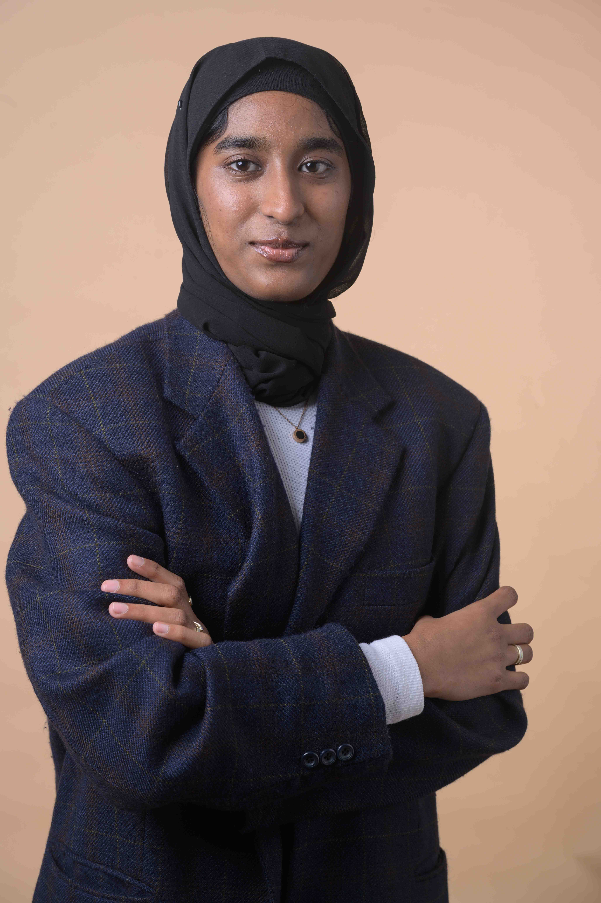

From physics notebooks
to production ML.
I came to AI from an unusual angle — a BSc in Physics, Chemistry and Mathematics from Bengaluru North University, then a leap to Paris for a Master's in AI & Data Science at Aivancity. The science background gave me a habit I lean on every day: be skeptical of your own results, run the controls, check whether what you measured is what you think you measured.
Since landing in Paris in 2024, I've worked across surprisingly different domains. Multimodal retrieval at NeuralTeks. Medical signal processing for seizure detection at AURA. Document intelligence research at Aivancity. NLP for recommendations at IntHealth. Currently agentic RAG and forecasting at INSEAD in Fontainebleau.
The thread is the same in every job: take messy real-world data, build the right model for it, and make it useful to someone outside the notebook.
I write clean Python, take MLOps seriously (Docker, MLflow, version-everything), and care about whether what I built actually works in production. Outside of paid work, I volunteer with Linkee distributing food across Paris and design UX for ethical-AI tools with the UN's Action Lab for Development.
Particulars
Education
Stack
Currently learning
Agentic systems, retrieval-augmented generation patterns, and the practical side of evaluating LLM-driven applications. Also: French, slowly.